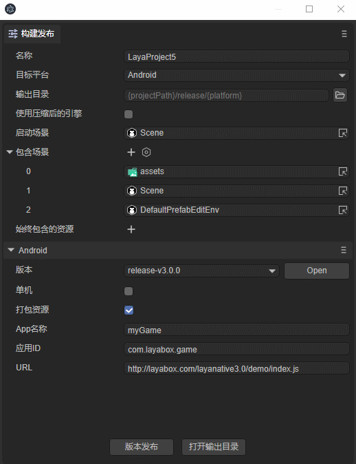
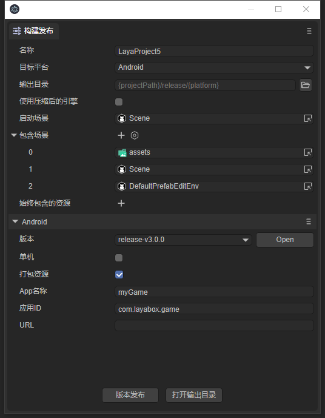
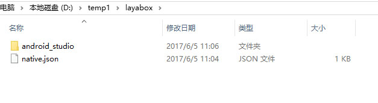

LayaBox 构建工具
构建工具用来生成LayaPlayer的移动端App项目，相当于App项目向导。目前支持Android（Eclipse项目、Android studio项目）和iOS(XCode项目)。
注意：
LayaNative3.0-Android，要求系统最低版本为4.3
LayaNative3.0-iOS，要求系统最低版本为10.0
1. 运行需求
1.1 基础开发环境
构建项目必须要准备好开发环境。比如：构建iOS项目需要准备好Mac电脑和XCode，android需要准备好Android studio。
2. 面向用户
无论是构建Android还是iOS项目，则必须要有相应的Android或iOS的App开发基础。 如果不具备，请先去学习了解相关的基础知识。
3. 在IDE中构建项目
使用IDE 发布项目，开发者首先在文件菜单中，打开“构建项目”选项，如动图1所示

（动图1）
目标平台选择iOS或者Adroid, 由于构建工具需的库文件比较大，因此并没有直接包含在LayaAirIDE中，在第一次使用这个工具的时候，会先下载SDK包，如下图：

(图2)
注意
这个文件比较大，所以下载的时候需要耐心等待。
4. 项目构建界面参数
在LayaAirIDE中打开项目构建的界面，如图3所示：
 (图3)
目标平台
构建生成的项目工程的类型，有Android studio项目、iOS 项目 两种选项，如果需要生成Android项目，可以选择Android-studio。 如果需要生成XCode(iOS)项目，则选择iOS选项。
版本
Native工程的版本，尽量与LayaAir引擎版本一致，否则可能存在版本兼容性问题单机
如果勾选此选项，则构建的项目打包的App是单机版，否则就是在线版。单机版不需要联网，没有对应的url，不用提供url。但是必须提供游戏资源，否则打包之后无法运行。单机版的地址固定为 http://stand.alone.version/index.js
打包资源
资源是脚本、图片、声音等资源。对于在线游戏，只要有游戏的url就能正常运行，但是把资源直接打进App包中的话，可以避免网络下载，加快资源载入速度。如果是单机游戏，由于没有提供游戏url，就必须给资源目录，把所需的资源全部打包进App。
打包进App的资源依然可以通过我们的dcc工具（资源缓存管理）进行更新。 如果这时候没有设置资源路径，在构建完项目以后，依然可以手动添加资源，添加方法参考 LayaDcc工具。
注意：
把资源打包的缺点是会增加包体的大小。
打包资源的在线游戏，必须在server端打dcc，否则就会失去打包的优势，依然会下载所有的资源。如何打dcc，参考 LayaDcc工具。
App名称
App的名称。同时也是构建项目的输出目录。
应用ID
应用的包名，这个正常情况下是不可见的。一般采用反域名命名规则（有利于分辨和避免与系统中已经有的APP冲突)。
例如 : com.layabox.runtime.demo
包名必须是 xxx.yyy.zzz 的格式，至少要有两级，即xxx.yyy 。否则打包会失败。URL
如果要打包的应用是一个在线项目，则需要提供一个启动url，指向一个js或json文件，是应用的入口。而通过LayaAir生成的项目，会输出一个启动页面，一般是index.js。 在测试的时候，为了方便，通常是使用的本地URL地址在浏览器中测试，当打成Android App的时候，必须有一个真正的webserver的地址，
例如：
局域网地址：
http://10.10.20.19:8888/index.js
实际地址:
http://nativetest.layabox.com/layaplayer/index.js
５. 构建好的项目工程的使用
构建好的 App工程，可以用对应的开发工具打开进行二次开发和打包等操作。
- Android-studio（android）项目可以使用 android-studio软件进行导入和开发。
- XCode（ios）项目可以使用 xcode 软件进行导入和开发。打开XCode(ios)项目后需要选择真正的ios设备进行build。（注意：真正的设备是 armv7、armv7s、arm64 架构。而如果使用ios Simulator 则是 X86 架构，目前 LayaNative 在 ios 设备上尚未支持 X86 架构，如果使用模拟器编译是无法通过的。
参考资源：
6. 手动切换单机版和网络版
构建完成之后，可以通过直接在项目中修改代码来切换单机版和网络版。
Android 项目
在构建的项目中打开MainActivity.java，搜索
mPlugin.game_plugin_set_option("localize","false");
单机版需要设置为"true"，如mPlugin.game_plugin_set_option("localize","true");
如果要设置为网络版，就要修改为：mPlugin.game_plugin_set_option("localize","false");， 并且设置正确的地址：
mPlugin.game_plugin_set_option("gameUrl", "http://你的地址/index.js");
iOS 项目
iOS项目构建完成后，项目目录下的 resource/scripts/index.js 脚本的最后有个执行loadUrl的函数，这里会加载首页地址，修改这里的地址就能切换单机版和网络版，单机版的地址固定为
http://stand.alone.version/index.js。例如一开始是网络版，地址为：
loadUrl(conch.presetUrl||"http://10.10.20.19:7788/index.js");
要改成单机版的话，修改这句话：
loadUrl(conch.presetUrl||"http://stand.alone.version/runtime.json");
反之亦然。注意
一旦修改了url地址，原来打包的资源就都失效了。这时候，需要手动删除 cache目录下内容，重新用layadcc来生成打包资源，参见LayaDCC工具。
7. 资源刷新
通过IDE构建好工程，如果选择的是单机版和打包资源版本。会在resource/cache目录下，把所有h5项目的资源（包括：脚本、图片、html、声音等）全部打包到了这个目录下。android的目录： assets/cache/iOS的目录： resource/cache/
但是在开发过程中，h5的项目一直在变化，为了避免每次都重新构建工程，可以通过命令行进行刷新。
资源包版本调用命令：layanative3 refreshres -u http://testgame.layabox.com/index.js
单机版本调用命令：layanative3 refreshres
Tips
1、必须在构建的app工程目录下，执行命令。最明显的标志就是要在navtie.json的目录下，如下图所示：

关于layanative命令行如何安装使用，请参考layanative命令行工具使用
8. 其他注意问题
android studio构建完成后，需要根据自己的环境修改android sdk的版本号，现在设置的是23，需要修改的 文件是 app/build.gradle。